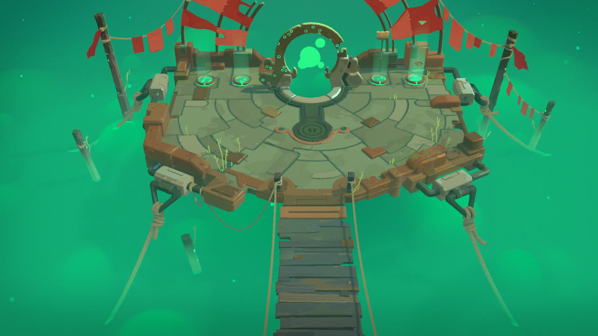
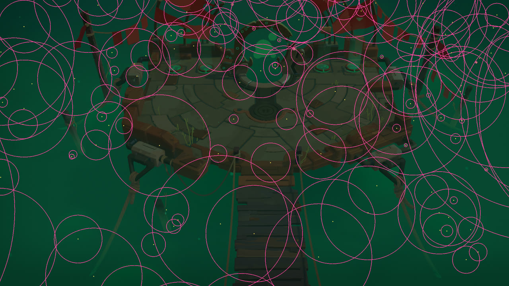
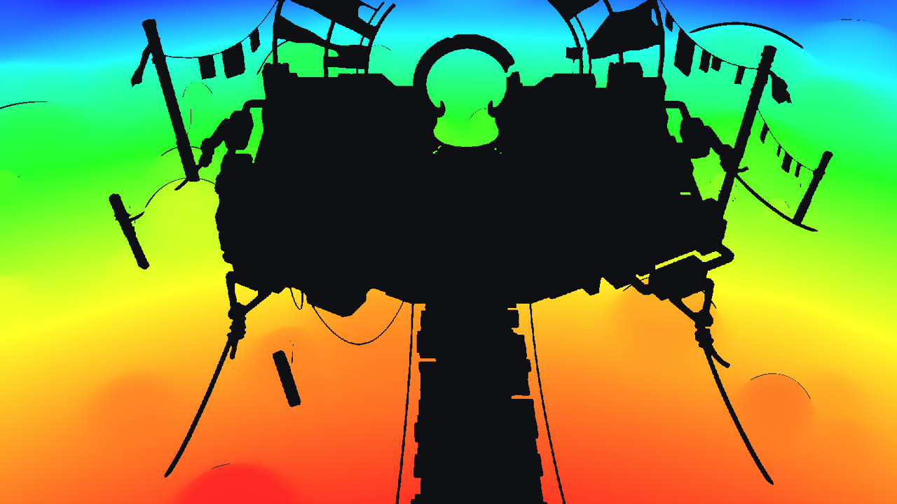

Technical artist on the sequel to Moonlighter, from pre-production to release. I worked on shaders and shading, procedural content generation, optimization and porting, bridging art and code.
Artists author the blob with regular Shuriken particle systems. An editor baker turns them into data that a compute shader re-simulates on the GPU. Each camera culls the particles, and a second compute pass ray-marches them as smooth-min metaball SDFs into a low-res ray-length buffer that the composite upscales and shades.

Final frame

SDF spheres after camera culling

Low-res ray-length buffer (1440×810)
With coding agentsSweep compute-shader variants (thread-group sizes, culling granularity, buffer resolution) and compare GPU timings from RenderDoc and PIX captures, and generate debug views on demand instead of hand-writing each one.
BotinGeneric: the toon look
The main lit shader behind the game's look, with sibling variants for characters, cloth, rocks and grass. Lighting goes through hand-authored light ramps per asset family instead of a Lambert falloff, and lit and shadowed areas get their own colours: post-process Volumes drive a global tint and a shadow-light colour, so each zone, time of day or boss phase restyles the whole scene without touching a single material. Stepped specular and rim, a world-space height gradient and per-instance colour variation complete the look.
Day volumeNight volume, same materialsLighting only: light vs shadow colour (day)Lighting only (night)
With coding agentsAudit every material and keyword to strip unused shader variants, batch-migrate materials when the shader changes, and build better debug views for ramps, light and shadow colours and Volume overrides.
Integration Tool
An editor workspace where VFX and audio artists build effects on top of character animations, in context: real rigs and weapons, and dungeon rooms generated around the preview. Everything lives on a Timeline (animation, VFX prefabs, camera shakes, flashes and FMOD events). A right-click Export VFX bakes the selected tracks into a VFXData asset of timed, Addressable entries, and at runtime a pooled VFXController plays it back with audio, flashes and shakes in sync.
The whole workspace: generated Houtu room, MoleTaalik@GlassSpike on its Timeline, and the tool inspector
TimelineAuthor VFX & audio on the animation
Export VFXBake selected tracks
VFXDataTimed Addressable entries
VFXControllerPooled runtime playback
With coding agentsDrive the editor through the Unity CLI to batch re-export VFXData and find missing or non-Addressable references, and scaffold Timeline tracks from a plain-language description so artists start from a draft instead of an empty track. Beyond that, iterate faster on the tool's UI and UX with the artists who use it every day, and automate more of the pipeline: auto-export on save, validation before commit and batch previews of every effect on every rig.
More bits
Pivot Painter windUnreal's Pivot Painter 2 workflow ported to our URP vegetation shaders: hierarchical branch and leaf motion baked into textures, no bones.Script the Blender bake and the import settings so new foliage goes through the pipeline in one command.
Vegetation instancingCustom instanced drawer for grass and props with Poisson-disk placement, Burst jobs, tight bounds and a cached bake for fast editor iteration.Profile the Burst jobs and tune bounds and batch sizes per scene.
WFC dungeonsWave Function Collapse tile sets and art translators that turn the generated layout into dressed rooms per biome.Generate and check tile-set rules, and flag rooms the translators can't dress.
Chrome TraceChrome tracing of dungeon generation to find and fix the slowest steps of every run.Read the traces, rank the slowest steps and propose fixes.
Aeolia cloudsRay-marched volumetric clouds below Aeolia's islands: 3D simplex and Worley noise baked by a compute shader, Beer's law absorption, two-lobe Henyey-Greenstein scattering and iridescent lightning flashing inside them.Try noise and step-count variants and keep the cheapest one that still matches the reference.
Room transitionsPortal transitions between dungeon rooms: camera moves, VFX, audio cues, and light and Volume data blending into the next room.Build a test scene that runs every transition and flags pops or blending glitches.
Console & handheldPerformance, memory and loading work for Switch 2 and Steam Deck.Dig through profiler captures and memory reports, and automate repetitive platform fixes.